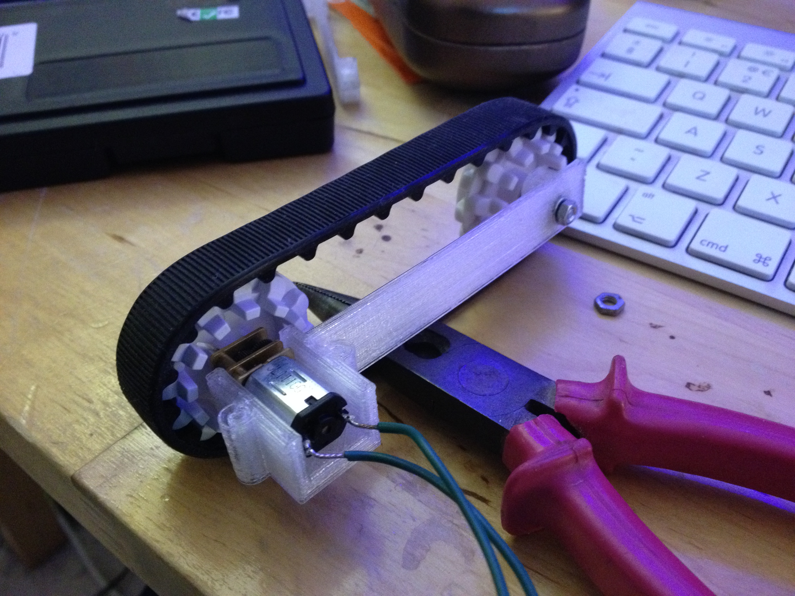

Will Jessop's Writings
Sailing, Food, Programming, Technology, and other things
|
Home
|
Posts
|
Tags
|
Monday, September 23, 2013
| tags:
robotics
3D Printing
Trying out the prototype caterpillar track mount
It works, but it needs more refinement.

Testing the new motor mount